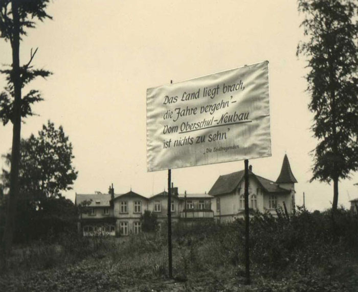

Schulgeschichte
| 1930 | In der Volksschule Bad Schwartau wird als Außenstelle des Eutiner Realgymnasiums eine Sexta eingerichtet. |
| 1932 | Mit der Einrichtung der Quarta wird die Schwartauer Außenstelle selbstständig. |
| 1935 | Umzug der sechsklassigen Oberschule mit ca. 180 Schülern und 9 Lehrkräften in das Gebäude Lübecker Straße 70, dort mit kriegsbedingter Unterbrechung (Herbst 1944 bis Weihnachten 1946) Unterricht bis 1956. |
| 1947 | Einrichtung der ersten Obersekunda. |
| 1955 |
Die Schule erhält den Namen: Staatliches Gymnasium Bad Schwartau. Neusprachliches und mathematisch-naturwissenschaftliches Gymnasium für Jungen und Mädchen. |
|

|
|
| 1956 |
Die Schule kann mit dem Umzug in das z.T. fertiggestellte Schulgebäude Lübecker Straße 75 beginnen. Der Bau der Unterrichtsflügel ist 1957 bezugsfertig und der Sportbetrieb in der Sporthalle kann 1960 aufgenommen werden. Bereits beim Einzug stellt sich heraus, dass die zu erwartenden Schülerzahlen als viel zu gering prognostiziert wurden. Es werden mobile Pavillons aufgestellt, aber die Einrichtung eines zweiten Gymnasiums in Bad Schwartau wird unumgänglich. |
| 1973 | Zum Schuljahresbeginn 1973/74 wird im "Städtischen Gymnasium im Entstehen", dem jetzigen "Gymnasium am Mühlenberg", der Unterricht aufgenommen. |
| 1975 | Dennoch bleibt an der "Mutterschule" dringender Raumbedarf bestehen. Hartnäckige Verhandlungen führen schließlich dazu, dass in zwei Phasen 1975 die Sonderräume für den naturwissenschaftlichen Unterricht, 1981 die Pausenhalle, das Sprachlabor, der Projektionsraum, die Oberstufenbibliothek und die neue Sporthalle mit den Kunsträumen erbaut werden. Der Sportplatz und die Außenanlagen werden neu gestaltet. |
| 1982 |
Wegen des Schulträgerwechsels wird ein neuer Name gewählt: Leibniz-Gymnasium, Gymnasium des Kreises Ostholstein in Bad Schwartau. |
|
2009 |
Die Stadt Bad Schwartau übernimmt die Trägerschaft des Gymnasiums. |
|
2019 |
Umfangreiche (energetische, Raumluft technische und digitale) Renovierung der naturwissenschaftlichen Räume. |
| 2021 |
Das Leibniz-Gymnasium wird von 658 Schüler*innen besucht, 54 Lehrer*innen unterrichten unsere Schüler*innen, sie werden von einem Schulsozialarbeiter und einer FSJ-lerin tatkräftig unterstützt. |